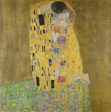

Gustav Klimt
Austrian Symbolist PainterGustav Klimt was a leading figure of the Vienna Secession movement, known for his symbolic, erotic, and highly decorative style. His works are characterized by intricate patterns, gold leaf, and themes of love, beauty, and femininity.
Masterwork

The Kiss (1907–1908)
Medium: Oil and gold leaf on canvas
Dimensions: 180 cm × 180 cm
"The Kiss" is Klimt’s most iconic painting, created during his "Golden Period". It depicts a couple locked in an intimate embrace, surrounded by rich patterns and glowing gold. The piece is widely interpreted as a symbol of romantic love and emotional intimacy, and stands as a pinnacle of Art Nouveau elegance.